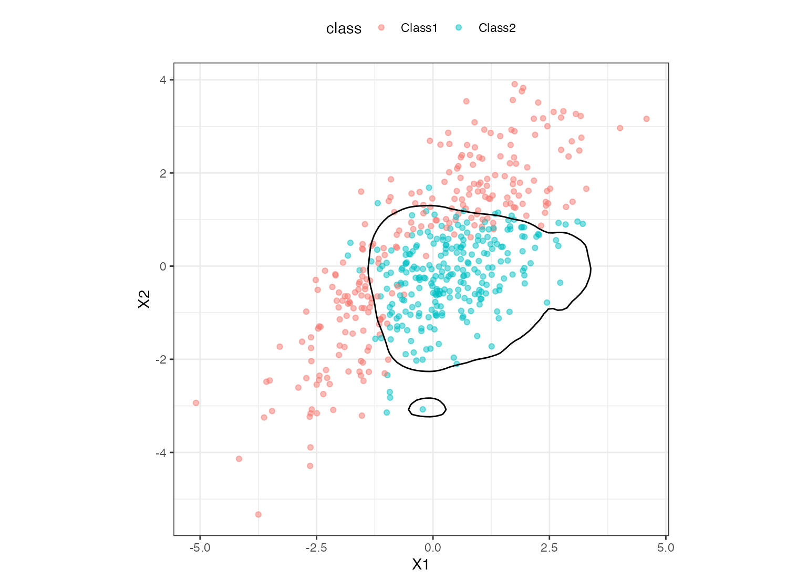

naive_Bayes() is a way to generate a specification of a model before
fitting and allows the model to be created using different packages in R.
naive_Bayes(mode = "classification", smoothness = NULL, Laplace = NULL) # S3 method for naive_Bayes update(object, smoothness = NULL, Laplace = NULL, fresh = FALSE, ...)
| mode | A single character string for the type of model. The only possible value for this model is "classification". |
|---|---|
| smoothness | An non-negative number representing the the relative smoothness of the class boundary. Smaller examples result in model flexible boundaries and larger values generate class boundaries that are less adaptable |
| Laplace | A non-negative value for the Laplace correction to smoothing low-frequency counts. |
| object | A linear discriminant model specification. |
| fresh | A logical for whether the arguments should be modified in-place of or replaced wholesale. |
| ... | Not used for |
The main arguments for the model are:
smoothness: The total amount of regularization
in the model. Note that this only used for the "klaR" engine where it is a
pure L2 smoothness (a.k.a ridge regression).
Laplace: Laplace correction for smoothing low-frequency counts.
These arguments are converted to their specific names at the time that the
model is fit. Other options and argument can be set using set_engine(). If
left to their defaults here (NULL), the values are taken from the
underlying model functions. If parameters need to be modified, update()
can be used in lieu of recreating the object from scratch.
For naive_Bayes(), the mode will always be "classification".
The model can be created using the fit() function using the following engines:
R: "klaR"(the default) or "naivebayes"
Engines may have pre-set default arguments when executing the model fit call. For this type of model, the template of the fit calls are:
naive_Bayes() %>% set_engine("klaR") %>% translate()
## Naive Bayes Model Specification (classification) ## ## Computational engine: klaR ## ## Model fit template: ## discrim::klar_bayes_wrapper(x = missing_arg(), y = missing_arg(), ## usekernel = TRUE)
naive_Bayes() %>% set_engine("naivebayes") %>% translate()
## Naive Bayes Model Specification (classification) ## ## Computational engine: naivebayes ## ## Model fit template: ## naivebayes::naive_bayes(x = missing_arg(), y = missing_arg(), ## usekernel = TRUE)
The standardized parameter names in parsnip can be mapped to their original names in each engine that has main parameters. Each engine typically has a different default value (shown in parentheses) for each parameter.
| parsnip | klaR | naivebayes |
| smoothness | adjust (1) | adjust (1) |
| Laplace | fL (0) | laplace (0) |
Note that usekernel is always set to TRUE for the klaR engine.
parabolic_grid <- expand.grid(X1 = seq(-5, 5, length = 100), X2 = seq(-5, 5, length = 100)) nb_mod <- naive_Bayes(smoothness = .8) %>% set_engine("klaR") %>% fit(class ~ ., data = parabolic) parabolic_grid$nb <- predict(nb_mod, parabolic_grid, type = "prob")$.pred_Class1 library(ggplot2) ggplot(parabolic, aes(x = X1, y = X2)) + geom_point(aes(col = class), alpha = .5) + geom_contour(data = parabolic_grid, aes(z = nb), col = "black", breaks = .5) + theme_bw() + theme(legend.position = "top") + coord_equal()model <- naive_Bayes(smoothness = 0.1) model#> Naive Bayes Model Specification (classification) #> #> Main Arguments: #> smoothness = 0.1 #>#> Naive Bayes Model Specification (classification) #> #> Main Arguments: #> smoothness = 1 #>#> Naive Bayes Model Specification (classification) #> #> Main Arguments: #> smoothness = 1 #>